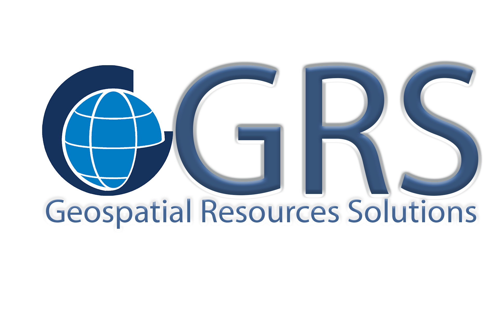

Innovative Geospatial Solutions for Sustainable Development
Supporting sustainable land and natural resource management through GIS, remote sensing, digital soil mapping, environmental assessment, spatial analytics, and capacity development.
Spatial data processing, mapping and decision support.
Earth observation and environmental monitoring.
Advanced soil information products and modelling.
Hydrological analysis using SWAT and geospatial tools.
GPS surveys and geospatial data acquisition.
QGIS, R, QSWAT, Digital Soil Mapping and GIS workflows.
GRS combines scientific expertise, field experience, and modern geospatial technologies to deliver reliable solutions for governments, NGOs, research institutions, development projects, and the private sector.
Email: geospatialresourcesolution@outlook.fr
Tel: (+237) 67150571
Yaoundé, Cameroon